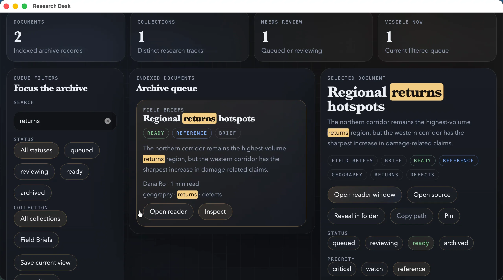

Research Desk · Real native demonstration
From documents to decisions.
Choose your folder, find a passage, save a review note and take your data with you. Recorded from the real macOS application using its native filesystem and SQLite bridge.
The native MP4, posters and captions are available from the RC4 release. The Research Desk preview is unsigned.

Unsigned local preview, source 13926ad, macOS ARM. Silent film with English captions. Actions run at their recorded speed; cuts remove waiting. Personal system labels are redacted. The export viewer uses a larger display font; its JSON content was verified unchanged.
Read the demonstration transcript
- Search the local document queue for “returns” and open the matching source.
- Select the demonstration folder through the native macOS picker.
- Save “Review west-corridor packaging on Friday.” in the reader.
- Close the reader and find the same note in the main window.
- Export the visible queue as JSONL through the native save dialog.
- Open the exported file and verify the saved note.
Download the demo MP4 → · Watch the narrated explainer · Reproduction and validation · Source on GitHub